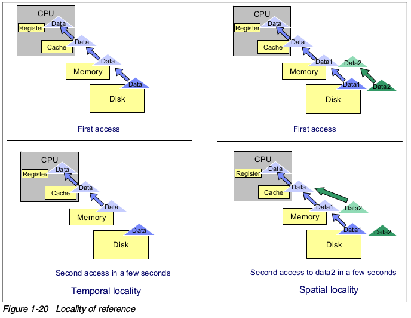

Mysql 杂谈
Mysql的通信
Mysql有两种连接方式：
（1）TCP/IP
（2）socket
对mysql.sock来说，其作用是程序与mysqlserver处于同一台机器，发起本地连接时可用。
例如你无须定义连接host的具体IP得，只要为空或localhost就可以。
在此种情况下，即使你改变mysql的外部port也是一样可能正常连接。
因为你在my.ini中或my.cnf中改变端口后，mysql.sock是随每一次 mysql server启动生成的。已经根据你在更改完my.cnf后重启mysql时重新生成了一次，信息已跟着变更。
CentOS 下的安装
查资料发现是CentOS 7 版本将MySQL数据库软件从默认的程序列表中移除，用mariadb代替了。
有两种解决办法：
1. 方法一：安装mariadb
MariaDB数据库管理系统是MySQL的一个分支，主要由开源社区在维护，采用GPL授权许可。开发这个分支的原因之一是：甲骨文公司收购了MySQL后，有将MySQL闭源的潜在风险，因此社区采用分支的方式来避开这个风险。MariaDB的目的是完全兼容MySQL，包括API和命令行，使之能轻松成为MySQL的代替品。
安装mariadb，大小59 M。
yum install mariadb-server mariadb
- 官网下载
wget http://dev.mysql.com/get/mysql-community-release-el7-5.noarch.rpm rpm -ivh mysql-community-release-el7-5.noarch.rpm yum install mysql-community-server
在应用程序中，经常需要全局唯一的ID作为数据库主键。如何生成全局唯一ID？
首先，需要确定全局唯一ID是整型还是字符串？如果是字符串，那么现有的UUID就完全满足需求，不需要额外的工作。缺点是字符串作为ID占用空间大，索引效率比整型低。
如果采用整型作为ID，那么首先排除掉32位int类型，因为范围太小，必须使用64位long型。
采用整型作为ID时，如何生成自增、全局唯一且不重复的ID？
方案一：利用数据库的自增ID，从1开始，基本可以做到连续递增。Oracle可以用SEQUENCE，MySQL可以用主键的AUTO_INCREMENT，虽然不能保证全局唯一，但每个表唯一，也基本满足需求。
数据库自增ID的缺点是数据在插入前，无法获得ID。数据在插入后，获取的ID虽然是唯一的，但一定要等到事务提交后，ID才算是有效的。有些双向引用的数据，不得不插入后再做一次更新，比较麻烦。
第二种方式是采用一个集中式ID生成器，它可以是Redis，也可以是ZooKeeper，也可以利用数据库的表记录最后分配的ID。
这种方式最大的缺点是复杂性太高，需要严重依赖第三方服务，而且代码配置繁琐。一般来说，越是复杂的方案，越不可靠，并且测试越痛苦。
第三种方式是类似Twitter的Snowflake算法，它给每台机器分配一个唯一标识，然后通过时间戳+标识+自增实现全局唯一ID。这种方式好处在于ID生成算法完全是一个无状态机，无网络调用，高效可靠。缺点是如果唯一标识有重复，会造成ID冲突。
Snowflake算法采用41bit毫秒时间戳，加上10bit机器ID，加上12bit序列号，理论上最多支持1024台机器每秒生成4096000个序列号，对于Twitter的规模来说够用了。
但是对于绝大部分普通应用程序来说，根本不需要每秒超过400万的ID，机器数量也达不到1024台，所以，我们可以改进一下，使用更短的ID生成方式：
53bitID由32bit秒级时间戳+16bit自增+5bit机器标识组成，累积32台机器，每秒可以生成6.5万个序列号，核心代码：
